본문콘텐츠영역
company introduction
Life where everyday becomes a culture
문화는 ‘소통’을 통해 발전합니다.
서로의 다름을 이해하고 공감을 나누는 소통은 더욱 풍성한 문화를 피워낼 것입니다.
부평구문화재단은 지역의 문화예술을 지속 발전할 수 있도록 소통을 통해 터를 가꾸는
문화 재단의 역할을 다할 것이며, 삶의 풍요를 위해 노력하겠습니다.
upcoming concert
부평구문화재단의 다양한 전시와 공연이 여러분을 기다리고 있습니다
-
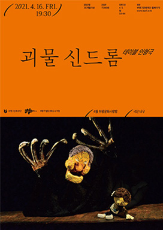 인형극 ‹괴물 신드롬› -
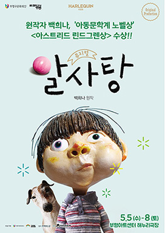 아동 뮤지컬 ‹알사탕› -
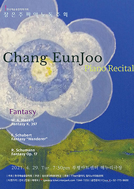 장은주 ‹피아노 독주회› -
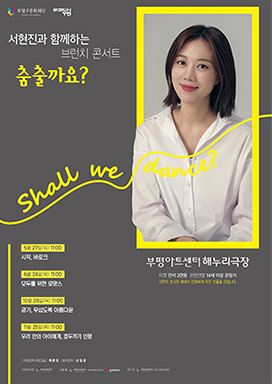 브런치 콘서트 -
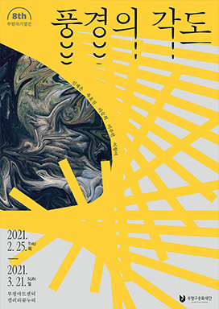 풍경의 각도 -
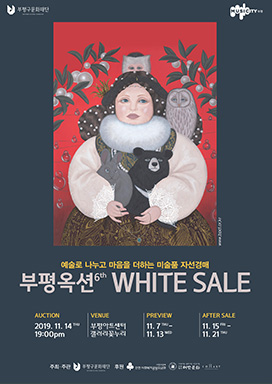 부평옥션 화이트세일 -
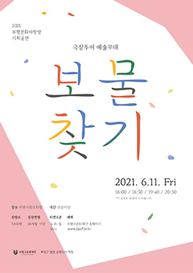 극장투어 예술무대 보물찾기 -
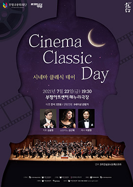 시네마 클래식 데이 -
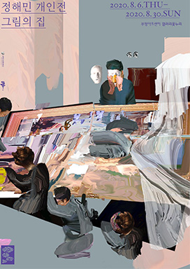 정해민 개인전 그림의 집 -
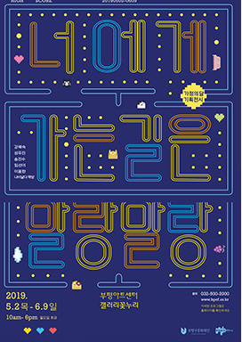 너에게 가는 길은 말랑말랑
arts for everyone
연간 40여개의 공연을 선보여 지역주민들과 공감하고 있으며 다양한 장르의 문화예술교육프로그램을 운영하고 있습니다.
문화와 예술, 그리고 평범한 삶에 대하여 두런두런 이야기를 나눌 수 있는 공간으로 나아가고자 합니다
-
- 부평아트센터
- 누구나 즐길 수 있는 복합문화공간
- 부평아트센터는 문화예술인의 활동 공간 및 지역민들을 위한 문화기반시설을 확충하고 풍요로운 문화 부평의 발전 기틀을 마련하기 위해 인천광역시와 부평구청이 출연한 복합 문화공간입니다.
-
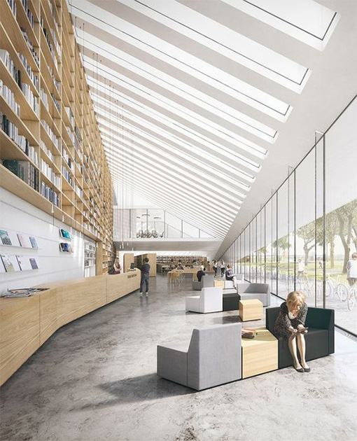
- 부평생활문화센터 공감168
- 우리가 함께 만드는 문화적 삶의 공간
- ‘지역의 주민이 문화적 욕구 충족을 위하여 자발적이거나 일상적으로 참여하여 행하는 유형·무형의 문화적 활동’을 뜻합니다. 부평구 생활문화 센터는 생활문화활동을 하고자 하는 지역주민 누구나 함께 소통하며 공감할 수 있는 공간입니다. 오늘부터 생활 문화 활동에 참여해보는건 어떨까요?
-
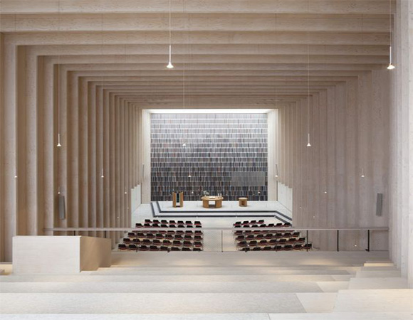
- 부평문화사랑방
- 우리집 근처에 언제나 열려있는 공연장
- 다양한 장르의 문화예술교육프로그램을 마련하여 운영하고 있습니다. 문화사랑방은 두런두런 부평구 지역주민들과 이야기를 함께 나눌 수 있는 공간으로 나아가고자 합니다.